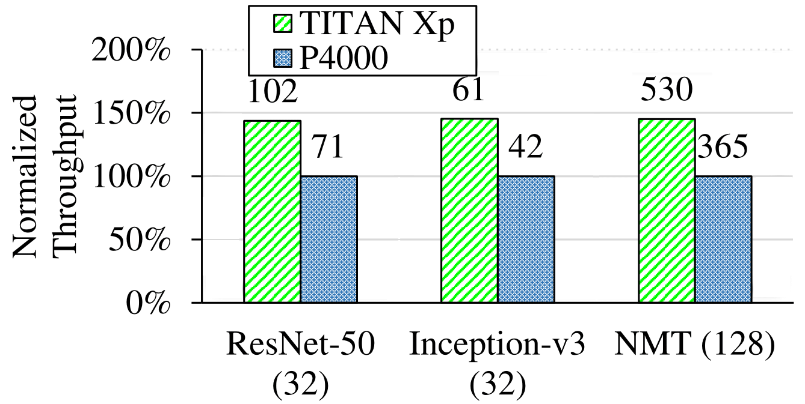
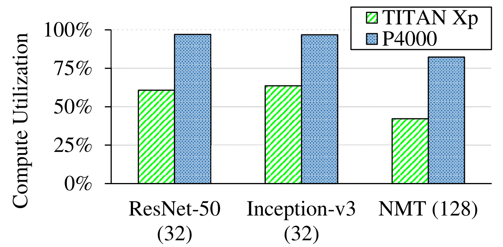
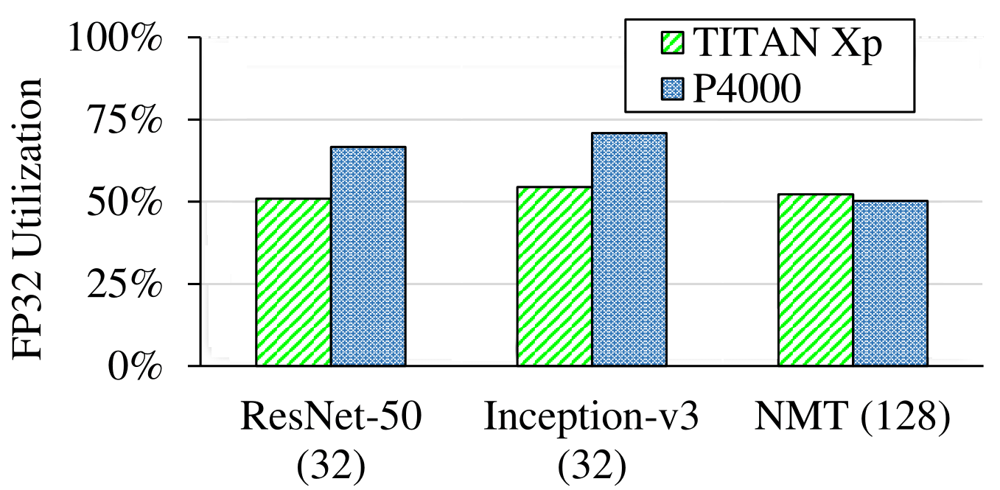
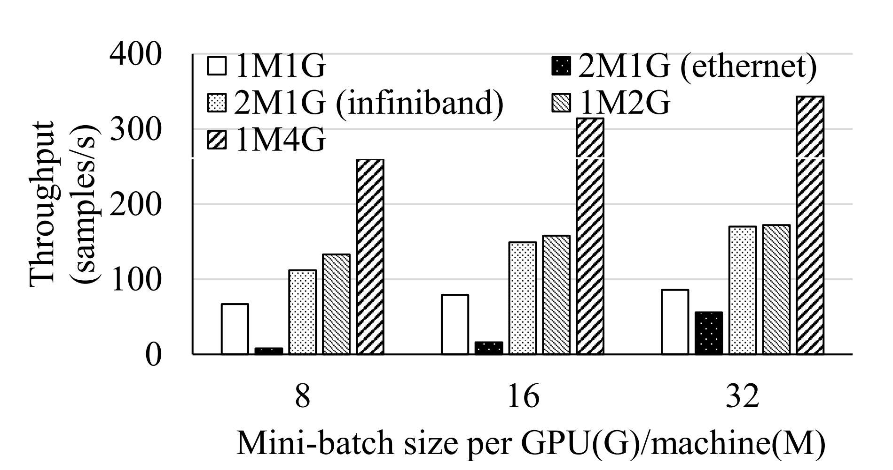
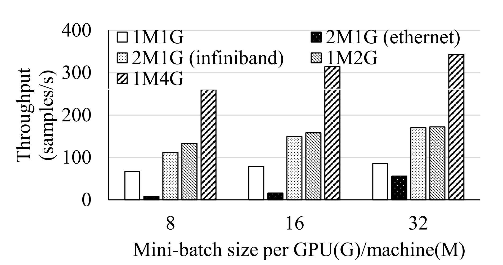

Analysis
Methodology
We collect profile data using nvprof. A typical example looks like this:
Likewise, we also collect floating-point utilization data:
/usr/local/cuda/bin/nvprof --profile-from-start off --export-profile profiler_output.nvvp -f --print-summary python program.py --program-args
Likewise, we also collect floating-point utilization data:
/usr/local/cuda/bin/nvprof --profile-from-start off --export-profile profiler_output_fp32.nvvp -f --print-summary --metrics single_precision_fu_utilization python program.py --program-args
Delayed and Focused Profiling
Since neural network libraries may include tuning
operations at the start of training, we wait
multiple iterations before turning on profiling
for obtaining a representative sample of the
training process.
With python, we use the numba library to control
when profiling samples are taken.
We call
import numba.cuda as cuda
We call
cuda.profile_start() to begin the profiling, and
cuda.profile_stop() to end
profiling. Due to the facts that the generated profile files can
become large and each training iteration follows the same computation
logic, the profiling period is usually chosen
to be only a small number of iterations. Moreover,
we carefully choose a period that only includes
only training computations, without validation. After cuda.profile_stop() is hit,
the training process can be safely killed by Ctrl+c. The .nvvp file
exported by the --export-profile option can be viewed by NVidia Visual Profiler
for further analysis.
Throughput
Throughput measures the number of training cases or
samples, where applicable, that are processed per
second during training. Most benchmarks already
output some throughput statistics without our
intervention and nvprof is not involved in calculating this metric.
When computing throughput, we are careful to only
measure during training iterations and to exclude
validation time and computation.


Compute Utilization
GPU compute utilization measures the relative amount of time
that the GPU spends actively running kernels. NVidia Visual Profiler provides this
information directly, but the number should be updated with the profiling overhead time excluded.


Floating-Point Utilization
GPU floating point utilization quantifies how busy
the GPU's floating-point compute units are during
training. This is informative since floating-point
arithmetic comprises the majority of computation
in all benchmarks. This is reported by the
profiler when run with the


--metrics single_precision_fu_utilization
option as above.
The profiler generates the FP32 utilization for each individual kernel. We calculate a weighted sum
over all kernels for the overall FP32 utilization of the training. We can also
find out which kernels are long but with low utilization. These kernels are to be optimized with
high priority if necessary.
Hardware Sensitivity
We studied how the performance of DNN training is affected by the hardware used. We used TitanXp for comparison against Quadro P4000. Detailed hardware specifications of these two types GPU are shown following:
| # of Multi-processors | Core count | Max Clock Rate (MHz) | Memory Size (GB) | LLC Size (MB) | Memory Bus Type | Memory BW (GB/s) | Bus Interface | Memory Speed (MHz) | |
|---|---|---|---|---|---|---|---|---|---|
| TitanXp | 30 | 3840 | 1582 | 12 | 3 | GDDR5X | 547.6 | PCIe 3.0 | 5705 |
| P4000 | 14 | 1792 | 1480 | 8 | 2 | GDDR5 | 243 | PCIe 3.0 | 3802 |
We compare the training throughput, GPU utilization and FP32 utilization. The results show that despite the more advanced GPU (TitanXp) deliver better training throughput, its compute resources are under-utilized.
  
Distributed Training
Training large DNNs can be done faster when multiple GPUs and/or multiple
machines are used. This is usually achieved by using data parallelism, where
mini-batches are split between individual GPUs and the results are then merged.
We studied how the scalability is affected by the network bandwidth. We tested
the training of ResNet-50 on MXNet on both multi-GPU and multi-machine environments.
Our prilimary results show that the bandwidth of ethernet will greatly lower the
overall training performance.

